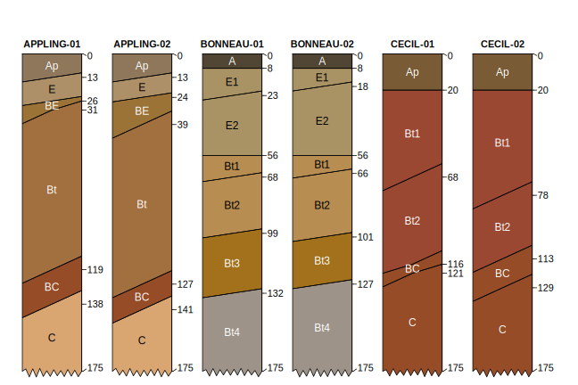

")
The Algorithms for Quantitative Pedology (AQP) project was started in 2009 to organize a loosely-related set of concepts and source code on the topic of soil profile visualization, aggregation, and classification into this package (aqp). Over the past 8 years, the project has grown into a suite of related R packages that enhance and simplify the quantitative analysis of soil profile data. Central to the AQP project is a new vocabulary of specialized functions and data structures that can accommodate the inherent complexity of soil profile information; freeing the scientist to focus on ideas rather than boilerplate data processing tasks doi:10.1016/j.cageo.2012.10.020. These functions and data structures have been extensively tested and documented, applied to projects involving hundreds of thousands of soil profiles, and deeply integrated into widely used tools such as SoilWeb https://casoilresource.lawr.ucdavis.edu/soilweb-apps. Components of the AQP project (aqp, soilDB, sharpshootR, soilReports packages) serve an important role in routine data analysis within the USDA-NRCS Soil Science Division. The AQP suite of R packages offer a convenient platform for bridging the gap between pedometric theory and practice.
Installation
Get the stable version from CRAN:
install.packages('aqp', dep=TRUE)Get the development version from Github, after installing the CRAN version + dependencies:
remotes::install_github("ncss-tech/aqp", dependencies=FALSE, upgrade=FALSE, build=FALSE)Install suggested packages:
p <- c("colorspace", "ape", "soilDB", "latticeExtra", "tactile", "compositions",
"sharpshootR", "markovchain", "xtable", "testthat", "Gmedian",
"farver", "Hmisc", "tibble", "RColorBrewer", "scales", "digest",
"MASS", "mpspline2", "soiltexture", "knitr", "rmarkdown")
install.packages(p)Examples
library(aqp)
# example data from three official series descriptions
data("osd")
# simulate 2 copies of each
# using horizon boundary distinctness offsets
set.seed(10101)
x <- perturb(osd, n = 2, boundary.attr = 'hzd', min.thickness = 5)
# tighter margins
par(mar = c(0, 0, 1, 0))
# adjust default style
# depict truncation at 175cm with ragged bottom
plotSPC(
x,
name.style = 'center-center',
cex.names = 1,
width = 0.33,
cex.id = 0.9,
hz.distinctness.offset = 'hzd',
max.depth = 175,
depth.axis = FALSE,
hz.depths = TRUE
)
Citation
citation("aqp")
#> To cite aqp in publications use:
#>
#> Beaudette, D., Roudier, P., Brown, A. (2023). aqp: Algorithms for
#> Quantitative Pedology. R package version 2.0.
#> <https://CRAN.R-project.org/package=aqp>
#>
#> Beaudette, D.E., Roudier, P., O'Geen, A.T. Algorithms for
#> quantitative pedology: A toolkit for soil scientists, Computers &
#> Geosciences, Volume 52, March 2013, Pages 258-268, ISSN 0098-3004,
#> http://dx.doi.org/10.1016/j.cageo.2012.10.020.
#>
#> To see these entries in BibTeX format, use 'print(<citation>,
#> bibtex=TRUE)', 'toBibtex(.)', or set
#> 'options(citation.bibtex.max=999)'.Related Papers and Book Chapters
- Beaudette D.E., P. Roudier, and J. Skovlin. 2016. Probabilistic representation of genetic soil horizons. In Book Digital soil morphometrics. Springer.
- Maynard, J.J., S.W. Salley, D.E. Beaudette, and J.E. Herrick. 2020. Numerical soil classification supports soil identification by citizen scientists using limited, simple soil observations. Soil Science Society of America Journal 84:1675-1692.
- Beaudette, D. E., J. Skovlin, A. G. Brown, P. Roudier, and S. M. Roecker. “Algorithms for Quantitative Pedology.” In Geopedology, edited by Joseph Alfred Zinck, Graciela Metternicht, Héctor Francisco del Valle, and Marcos Angelini, 201–22. Cham: Springer International Publishing, 2023. https://doi.org/10.1007/978-3-031-20667-2_11.